חוסר הקשר
זהו ללא ספק הסוג הנפוץ ביותר של מניפולציה בתוכן תקשורתי בה נתקלים חדרי החדשות ברחבי העולם.
התוכן עצמו הוא אמיתי ולא נערך או מפוברק, ולכן הוא לא באמת עבר 'מניפולציה'. עם זאת, הוא מוצג לעיתונאי לצד מידע שאינו מייצג את מה שנראה בתצלום או בוידיאו.
מקרה מבחן: ההוצאה להורג בסייגון (1968)
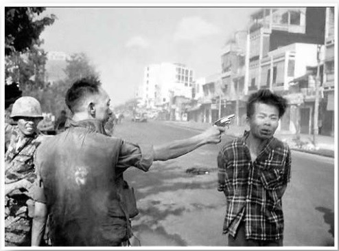צילום: אדי אדמס. התצלום שלו משנת 1968, תופס ירי מטווח אפס, זיכה אותו בפרס פוליצר ושינה את השיח הציבורי ודעת העולם על מלחמת וייטנאם.
הסיפור מאחורי התמונה
האיש שהוצא להורג הוא נגויין ואן לם, שהיה מפקד כוח וייטקונג שנודע לשמצה בתור "פלוגת הנקמה". באותו היום, הפלוגה רצחה כמה עשרות אזרחים בלתי חמושים וכן קציני משטרה רבים ומשפחותיהם. כשהוא נתפס לבסוף, מוקף גופות של אנשים שהרג, מפקד המשטרה, גנרל נגויין נגוק לואן, החליט לירות בו באופן בלתי מתוכנן.
לאחר ההוצאה להורג, נגוק לואן היורה אמר לעיתונאי שהיה במקום: "האנשים האלה הרגו הרבה מהחברים שלי. אני חושב שבודהה יסלח לי".
ההשלכות
עוצמתו של הרגע המצולם, הפך את גנרל נגוק לואן שלחץ על ההדק, לנבל. התצלום המשיך לרדוף אותו בשארית חייו. בית חולים אוסטרלי סירב לטפל בו, הוא הועבר לטיפול בארה"ב שם קראו לגרש אותו מהמדינה. הוא פתח מסעדת פיצה בוושינגטון, אך נאלץ לסגור את המקום לאחר שלא הצליח להישאר אנונימי, והמסעדה ספגה מעשי ונדליזם רבים.
החרטה של אדי אדמס
אדמס הצלם טען מאוחר יותר כי לא ידע את הרקע לאירוע. יותר מאוחר אדמס התנצל בפני נגוק לואן ומשפחתו והתחרט על כך שפרסם את התמונה.
"הגנרל הרג את הוייטקונג; אני הרגתי את הגנרל במצלמתי. עדיין צילומים הם כלי הנשק החזק ביותר בעולם. אנשים מאמינים בהם; אבל צילומים משקרים, אפילו ללא מניפולציה. הם רק חצאי-אמיתות."article לקריאת המאמר המלא
מקרה מבחן: טוביה גרוסמן (2000)

ב-29 בספטמבר 2000, ערב ראש השנה, נסע טוביה גרוסמן, יהודי אמריקאי תושב שיקגו, עם שני חברים במונית שעברה דרך שכונה ערבית בירושלים. תקופה זו הייתה ראשית האינתיפאדה השנייה. מתפרעים פלסטינים הקיפו את המונית, גררו את הנוסעים החוצה והכו אותם. גרוסמן נדקר ברגלו וסלעים הוטחו בראשו, אך הוא הצליח לנוס אל שוטר משמר הגבול ישראלי שהיה סמוך למקום והגן עליו.
העיוות בתקשורת
צלמים עצמאיים ששהו בסמוך לאזור צילמו את השוטר מנופף באלה ומגן על גרוסמן, בעוד זה זב דם. התמונה פורסמה לאחר מכן בכלי תקשורת שונים ברחבי העולם (כולל הניו יורק טיימס) עם כיתוב מטעה, לפיו גרוסמן הפצוע הוא פלסטיני המוכה על ידי שוטר ישראלי.
התיקון
אביו של גרוסמן זיהה את בנו בתצלום ומיהר לשלוח מכתב דרישה לתיקון לניו יורק טיימס. העיתון פרסם התנצלות ותיקון כי מדובר ב"סטודנט אמריקאי בישראל, ולא בפלסטיני".
article לקריאת הראיון ב-Ynetהאם תמונה יכולה לספר "סיפור שלם"?

האם תמונה יכולה לשקף את כל מה שקרה במציאות? המקרים של אדי אדמס וטוביה גרוסמן מוכיחים כי הקשר (Context) הוא הכל. ללא ההקשר הנכון, גם תמונה אותנטית לחלוטין יכולה ליצור מצג שווא ולספר סיפור הפוך מהמציאות.
אדמס: "הגנרל הרג את המחבל עם אקדח, אבל אני הרגתי את הגנרל עם המצלמה."
 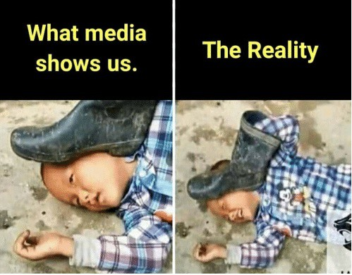
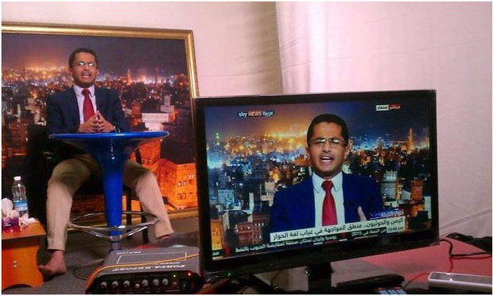
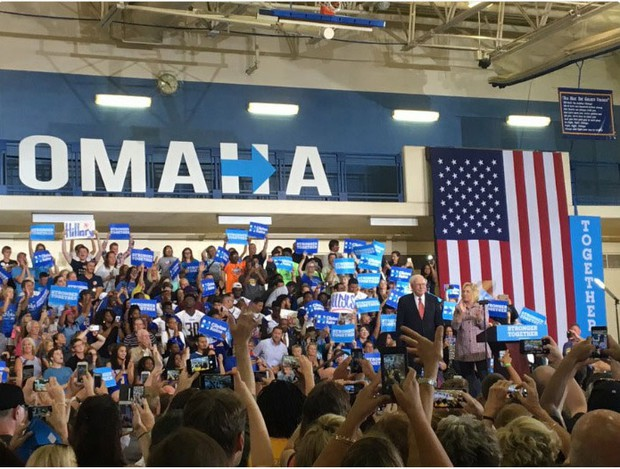
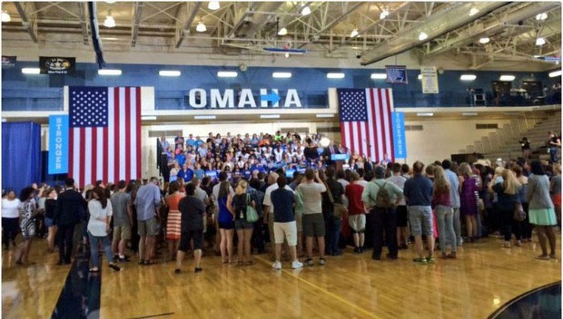
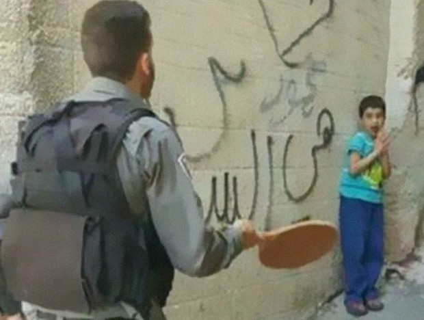
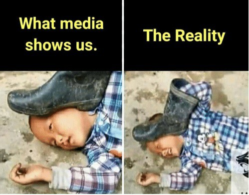
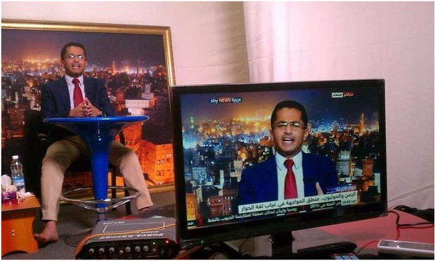
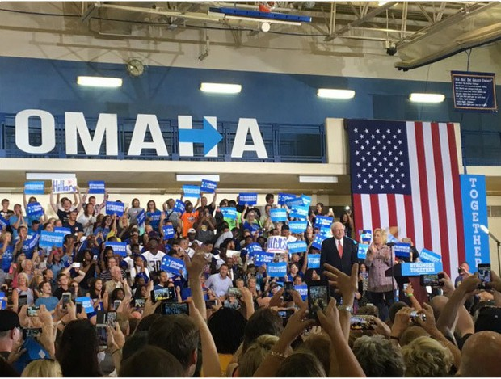
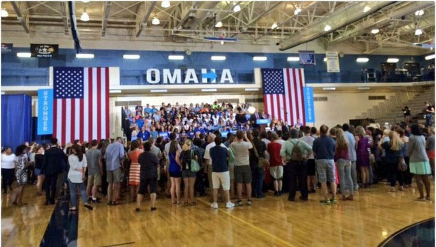
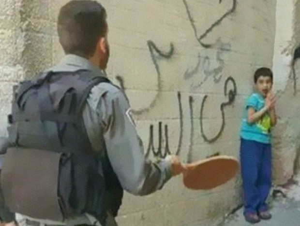


הערה לגבי התמונה עם הילדים בכלובים: זו הייתה הפגנה להמחשה, אך התמונה הופצה כאילו מדובר במעצר אמיתי.